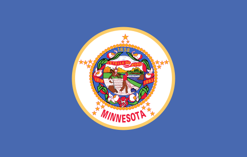
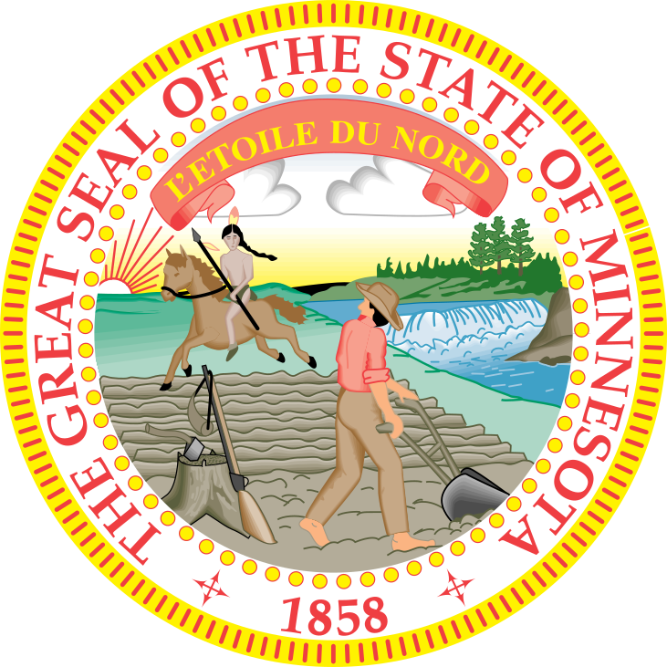
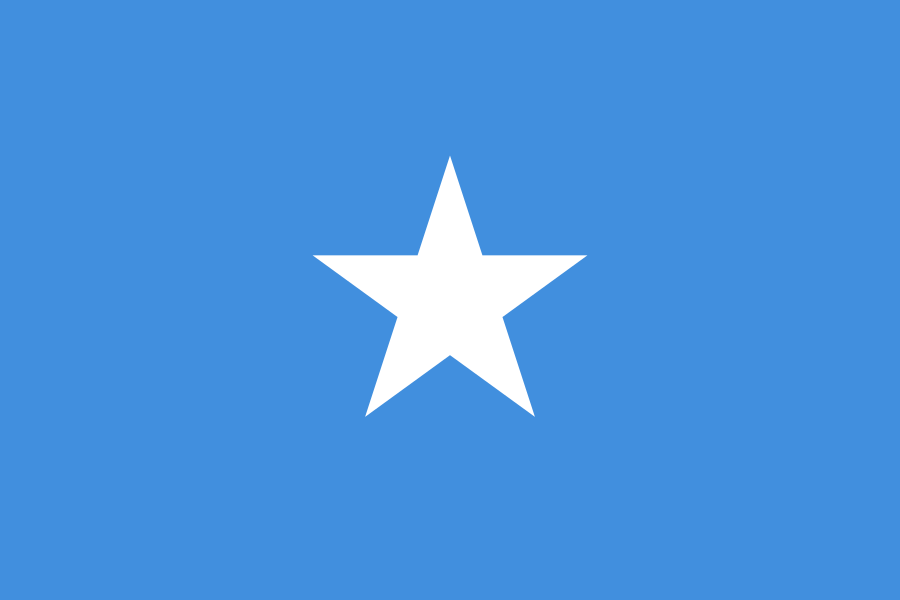

Why Minnesota changed its flag, who decided, what every symbol means — and why a settled question keeps getting relitigated.
The imagery on the old seal. The pre-2024 flag was the state seal on a blue field: a white settler plowing in the foreground, a rifle and powder horn against a stump, while a Native man on horseback rides into the distance. The artist's own family described what it meant — Mary Henderson Eastman, wife of seal designer Capt. Seth Eastman, published an 1850 poem describing the land passing “to the white man's grasping hand.” That reading is anchored in documented history: the U.S.–Dakota War of 1862 and the 1863 federal Dakota Expulsion Act, which made it illegal for Dakota people to live in Minnesota and forcibly removed roughly 1,300 of them.
It was, by design standards, a bad flag. A classic “seal on a bedsheet” — illegible at a distance, nearly identical to a dozen other states. The North American Vexillological Association's 2001 survey ranked it 67th of 72 U.S. and Canadian flags.


The contested part: a 1983 revision turned the rider to face “due south,” and state law later described the figure as representing “the great Indian heritage of Minnesota.” Conservatives cite this to rebut the displacement reading; Native leaders and the commission's Dakota members argued the composition still depicted erasure.
Here is where the “forced on us” framing gets complicated.
The deliberation was real and public. The 2023 Legislature created the State Emblems Redesign Commission inside the state-government omnibus bill (Laws of Minnesota 2023, Ch. 62). It took 2,128 public flag submissions, held public meetings, narrowed to finalists, and adopted the final design 11–1 on December 19, 2023. The flag became official on Statehood Day, May 11, 2024.
But the authorization wasn't bipartisan. The enabling language passed on the DFL trifecta's votes inside a budget bill, and Republican amendments to require a statewide referendum failed. There was no popular vote — and that absence, more than the design, is what opponents keep returning to.
The 13-member commission drew appointees from the governor, the Secretary of State, the Historical Society, the Indian Affairs Council, and the state's ethnic-affairs councils — plus four non-voting legislators from both parties (DFL Reps. Mike Freiberg and Sen. Mary Kunesh; GOP Rep. Bjorn Olson and Sen. Steve Drazkowski). Republicans had seats at the table; they did not have the votes to force a referendum. The lone “no” on the final design came not from the GOP but from the Council on Minnesotans of African Heritage's appointee.
| When | What happened |
|---|---|
| 2023 | Legislature (DFL trifecta) creates the redesign commission. GOP referendum amendments fail. |
| Dec 19, 2023 | Commission adopts the new flag, 11–1, from 2,128 public submissions. |
| Mar 2024 | Republicans file a suite of bills for a public vote, incl. a constitutional amendment. They go nowhere. |
| May 11, 2024 | New flag becomes official on Statehood Day — no statewide popular vote. |
| 2024–2026 | A dozen-plus cities and four counties vote to keep or revert to the old flag. |
| Apr 2026 | House DFLers file HF5077 to dock 10% of local aid from cities flying the old flag. Declared dead. |
| May 2026 | A flag-burning video circulates at the GOP convention; Republicans file a fresh three-bill vote package. |
| Jun 17, 2026 | Minnesota Poll: 30% approve, 50% disapprove — but voters rank fraud, AI and data centers higher. |
An abstract outline of Minnesota — the land — also read as the night sky.
The state's water: the Land of 10,000 Lakes, the Mississippi headwaters, and Lake Superior.
The North Star — the motto L'Étoile du Nord (“Star of the North”). One point faces true north. Its eight-pointed form mirrors the brass star set into the floor of the Capitol rotunda.
Design professionals largely praised it; some of the public found it corporate. And almost immediately, a specific attack spread: that it resembles the Somalia flag.
Why the comparison doesn't hold. Somalia's flag is a solid light-blue field with a single five-pointed white star centered on it. Minnesota's has an asymmetric two-tone field, a navy state-shape, and an eight-pointed star — different layout, different star, different structure. The Secretary of State noted plenty of U.S. flags share palettes with foreign ones (Iowa/France, Texas/Chile) without anyone alleging hidden allegiance.

The designer. The base design came from Andrew Prekker, then 24, of Luverne, with no formal design training; he'd posted an early version in a “Minnesotans for a Better Flag” group before the commission existed. His aim was a clean, modern flag reading instantly as Minnesota — water, land, the North Star. The commission modified it, swapping his striped field for solid water-blue and the eight-pointed Capitol star.
A flag is cheap, vivid, and emotionally legible. You can put it on a screen in a second; it requires no policy literacy; it lets a candidate signal tribe and grievance without taking a position that costs money or votes. The escalation is visible on both sides: a flag-burning video circulated at the May 2026 GOP convention, and a month earlier House DFLers filed a bill to financially penalize cities flying the old flag. Both are gestures, not governance.
Only the State Capitol is legally required to fly the official flag, so local governments may choose — flying the old one violates no statute.
Counties with resolutions:
Cities flying or reverting to the old flag:
Elk River acted after ~75% of surveyed residents wanted the former flag. Inver Grove Heights estimated its switch back at about $500. List is illustrative, not exhaustive.
In April 2026, eight House DFLers filed HF5077, docking 10% of local aid from any city flying a non-official flag. Lead author Rep. Mike Freiberg — who sat on the redesign commission as a non-voting member — called the cities' moves a “manufactured culture war” and conceded the bill was “not a totally serious proposal.” It has no Senate companion and was declared dead.
On the other side, Republicans have repeatedly tried to put the flag to a vote — a 2024 bill suite (incl. a constitutional amendment) and a 2026 three-bill package backed by Reps. Greg Davids and Marj Fogelman. So “nobody will let us vote” has a wrinkle.
Historically, the U.S. protected flag defiance — it didn't punish it. After the Civil War there was no penalty for Southern states flying Confederate colors; the First Amendment protects even offensive displays. The notable federal flag action of the era cut the other way: an 1887 order by President Grover Cleveland returned captured Confederate battle flags as a reconciliation gesture. States kept Confederate symbolism in their flags for over a century with no federal penalty — Mississippi didn't remove the battle emblem until 2021. Against that backdrop, docking a city's aid for flying the previous official state flag is the anomaly, not a normal response.
Minnesota's process was real — but not the only model. The flag-change wave is national, and states did it differently:
| State | Year | How they did it |
|---|---|---|
| Mississippi | 2020 | Statewide public referendum — voters approved the new flag. |
| Utah | 2024 | Passed through the Legislature and signed by the governor. |
| Minnesota | 2024 | Appointed commission with public submissions — but no popular vote. |
A flag referendum isn't unprecedented — a deep-red Southern state did exactly that. Minnesota's constitution, though, doesn't offer that path without a constitutional amendment first.
| Group | Approve | Disapprove | Not sure |
|---|---|---|---|
| All | 30 | 50 | 20 |
| Hennepin/Ramsey | 45 | 30 | 25 |
| Rest of metro | 28 | 53 | 19 |
| Southern Minn. | 18 | 64 | 18 |
| Northern Minn. | 20 | 65 | 15 |
| DFL/lean DFL | 55 | 16 | 29 |
| GOP/lean GOP | 2 | 90 | 8 |
| Independent/other | 26 | 52 | 21 |
| Trump voters | 5 | 84 | 10 |
| Harris voters | 52 | 22 | 26 |
We can't read anyone's intent, and we don't assert motive. We can put the poll's own numbers next to each other. Voters say they're worried about fraud (81%), AI (77%), and data centers (63% opposed) — material questions, with real money and real decisions in front of the Legislature. On the biggest of them, fraud, the party in power — Democrats — is losing the trust contest, 45% to 38%.
The flag was changed through a real, public, deliberative commission process — and a party-line vote that declined to put the question to voters. Both are true. The design means what its makers say: land, water, the North Star. The “Somalia flag” comparison is asserted more than shown. The outrage is genuine in sentiment and largely manufactured in timing.
You decide what it means. We just lay out the record.
No. The Legislature created an appointed commission, which adopted the design 11–1 after taking 2,128 public submissions. There was no statewide popular vote, and GOP amendments to require one failed. That absence is the core of the “forced on us” complaint.
The old seal depicted a settler plowing while a Native man rides away — imagery the designer's own family described in 1850 as displacement. Native leaders and the commission's Dakota members read it as erasure; conservatives note a 1983 revision turned the rider south and that state law later called it “Indian heritage.” Both readings are documented.
Not really. Somalia's flag is a solid light-blue field with one central five-pointed star. Minnesota's has an asymmetric two-tone field, a navy state-shape, and an eight-pointed star. Many U.S. flags share palettes with foreign flags without anyone alleging a hidden meaning.
Yes. Only the State Capitol is legally required to fly the official flag, so flying the old one violates no statute. A DFL bill (HF5077) to dock local aid from cities that do was declared dead and has no Senate companion.
Republicans have filed bills to do exactly that, twice. But Minnesota's constitution has no citizen-referendum process, so a binding vote requires a constitutional amendment — which must pass the DFL-controlled Legislature first. It hasn't.
About $35,000 of a $45,000 appropriation, per the Minnesota Historical Society — a fraction of, e.g., Utah's roughly $500,000 redesign.
MN06Watch documents what your representatives do — receipts, not rage. This report also runs on Substack, where you can subscribe for accountability coverage.